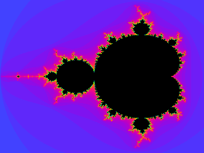
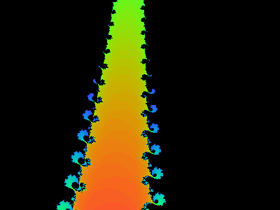
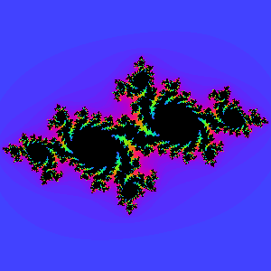
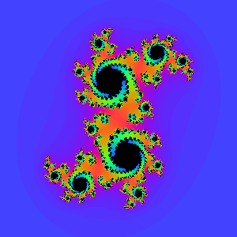
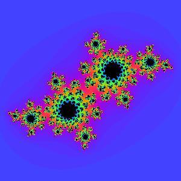
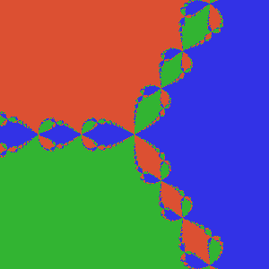
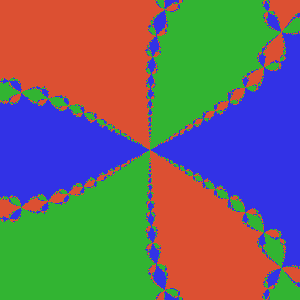

18 Fractals with Complex Tensors
Fractals like the Mandelbrot set and Julia sets are defined by iterating a complex map \(z \mapsto z^2 + c\) and checking whether the orbit escapes to infinity.
This chapter computes fractals using ComplexTensor arithmetic. Each iteration step is pointwise across the entire complex plane: a single el/* or el/+ call applies to every grid point simultaneously. Escape counts are accumulated as tensors using el/<= masks — no per-pixel loops needed.
(ns lalinea-book.fractals
(:require
;; La Linea (https://github.com/scicloj/lalinea):
[scicloj.lalinea.tensor :as t]
[scicloj.lalinea.elementwise :as el]
;; Tensor <-> BufferedImage conversion:
[tech.v3.libs.buffered-image :as bufimg]
;; Visualization annotations (https://scicloj.github.io/kindly-noted/):
[scicloj.kindly.v4.kind :as kind]
[clojure.math :as math]))Building a complex plane grid
We represent the complex plane as a ComplexTensor of shape [height width], where each element is a complex number \(x + yi\). t/compute-tensor fills the underlying [h w 2] real tensor with the real and imaginary parts.
(def complex-grid
(fn [re-min re-max im-min im-max h w]
(t/complex-tensor
(t/compute-tensor [h w 2]
(fn [r c part]
(if (zero? part)
(+ re-min (* (- re-max re-min) (/ c (double (dec w)))))
(+ im-min (* (- im-max im-min) (/ r (double (dec h)))))))
:float64))))A small test grid — the four corners should span the range:
(let [g (complex-grid -2.0 1.0 -1.5 1.5 3 3)
raw (t/->tensor g)]
{:shape (t/complex-shape g)
:top-left-re (raw 0 0 0)
:bottom-right-im (raw 2 2 1)}){:shape [3 3], :top-left-re -2.0, :bottom-right-im 1.5}Mandelbrot set
The Mandelbrot set is the set of \(c\) values for which the orbit of \(z_0 = 0\) under \(z_{n+1} = z_n^2 + c\) does not escape. We color each pixel by how many iterations it takes to escape \(|z| > 2\).
The counting is fully vectorized: at each iteration we build a 0/1 mask of pixels that haven’t escaped yet (el/<=) and add it to the running count tensor.
(def mandelbrot-counts
(fn [re-min re-max im-min im-max h w max-iter]
(let [c (complex-grid re-min re-max im-min im-max h w)
zero-grid (t/complex-tensor
(t/compute-tensor [h w 2]
(fn [_ _ _] 0.0) :float64))]
(loop [z zero-grid counts (t/zeros h w) k 0]
(if (>= k max-iter)
counts
(let [z2 (t/materialize (el/+ (el/* z z) c))
mask (el/<= (el/abs z2) 2.0)]
(recur z2 (t/materialize (el/+ counts mask)) (inc k))))))))Rendering
Map iteration counts to colors. Points inside the set (count = max-iter) are black; others are colored by how quickly they escape.
(def counts->image
(fn [counts h w max-iter]
(t/compute-tensor [h w 3]
(fn [r c ch]
(let [cnt (long (counts r c))]
(if (= cnt max-iter) 0
(let [t (/ (double cnt) max-iter)]
(case (int ch)
0 (int (* 255 (* 0.5 (+ 1.0 (math/cos (* 2.0 math/PI (+ t 0.0)))))))
1 (int (* 255 (* 0.5 (+ 1.0 (math/cos (* 2.0 math/PI (+ t 0.33)))))))
2 (int (* 255 (* 0.5 (+ 1.0 (math/cos (* 2.0 math/PI (+ t 0.67))))))))))))
:uint8)))The classic view
(def mandelbrot-img
(let [h 300 w 400 max-iter 50
counts (mandelbrot-counts -2.0 0.7 -1.2 1.2 h w max-iter)]
(counts->image counts h w max-iter)))(bufimg/tensor->image mandelbrot-img)
Zooming in
The Mandelbrot set has infinite detail at every scale. Here’s a zoom into the “Seahorse Valley”:
(def mandelbrot-zoom
(let [h 300 w 400 max-iter 100
counts (mandelbrot-counts -0.77 -0.73 0.05 0.08 h w max-iter)]
(counts->image counts h w max-iter)))(bufimg/tensor->image mandelbrot-zoom)
Julia sets
A Julia set uses a fixed \(c\) and varies the starting point \(z_0\). Each choice of \(c\) produces a different fractal.
(def julia-counts
(fn [c-re c-im re-min re-max im-min im-max h w max-iter]
(let [z0 (complex-grid re-min re-max im-min im-max h w)
c-grid (t/complex-tensor
(t/compute-tensor [h w 2]
(fn [_ _ part] (if (zero? part) c-re c-im))
:float64))]
(loop [z z0 counts (t/zeros h w) k 0]
(if (>= k max-iter)
counts
(let [z2 (t/materialize (el/+ (el/* z z) c-grid))
mask (el/<= (el/abs z2) 2.0)]
(recur z2 (t/materialize (el/+ counts mask)) (inc k))))))))Gallery of Julia sets
Different values of \(c\) produce different shapes.
\(c = -0.7 + 0.27i\) — a dendrite (connected, empty interior):
(def julia-dendrite
(let [h 300 w 300 max-iter 80
counts (julia-counts -0.7 0.27 -1.5 1.5 -1.5 1.5 h w max-iter)]
(counts->image counts h w max-iter)))(bufimg/tensor->image julia-dendrite)
\(c = 0.355 + 0.355i\) — a connected Julia set:
(def julia-connected
(let [h 300 w 300 max-iter 80
counts (julia-counts 0.355 0.355 -1.5 1.5 -1.5 1.5 h w max-iter)]
(counts->image counts h w max-iter)))(bufimg/tensor->image julia-connected)
\(c = -0.4 + 0.6i\) — a rabbit-like Julia set:
(def julia-rabbit
(let [h 300 w 300 max-iter 80
counts (julia-counts -0.4 0.6 -1.5 1.5 -1.5 1.5 h w max-iter)]
(counts->image counts h w max-iter)))(bufimg/tensor->image julia-rabbit)
Newton’s fractal
Newton’s method finds roots of equations by iterating \(z_{n+1} = z_n - f(z_n) / f'(z_n)\). In the complex plane, each starting point converges to one of the roots — and the boundaries between convergence regions form a fractal.
We apply Newton’s method to \(f(z) = z^3 - 1\), whose roots are the three cube roots of unity: \(\omega_0 = 1\), \(\omega_1 = e^{2\pi i/3}\), \(\omega_2 = e^{4\pi i/3}\). Since \(f'(z) = 3z^2\), the iteration is:
\[z_{n+1} = z - \frac{z^3 - 1}{3z^2}\]
The division uses el//, which handles complex inputs natively — no need for a manual formula.
(def newton-roots
(fn [re-min re-max im-min im-max h w max-iter]
(let [z0 (complex-grid re-min re-max im-min im-max h w)
;; Constant grid of 1 + 0i
one (t/complex-tensor
(t/compute-tensor [h w 2]
(fn [_ _ part] (if (zero? part) 1.0 0.0))
:float64))
;; The three cube roots of unity
roots [(t/complex 1.0 0.0)
(t/complex (math/cos (/ (* 2.0 math/PI) 3.0))
(math/sin (/ (* 2.0 math/PI) 3.0)))
(t/complex (math/cos (/ (* 4.0 math/PI) 3.0))
(math/sin (/ (* 4.0 math/PI) 3.0)))]]
;; Iterate Newton's method: z_{n+1} = z - (z³ - 1) / (3z²)
(let [z-final (loop [z (t/clone z0) k 0]
(if (>= k max-iter)
z
(let [z2 (el/* z z)
z3 (el/* z z2)
fz (el/- z3 one)
fpz (el/scale z2 3.0)]
(recur (t/materialize (el/- z (el// fz fpz)))
(inc k)))))
;; Classify: compute distance to each root as a tensor
dists (mapv (fn [root]
(let [root-grid (t/complex-tensor
(t/compute-tensor
[h w 2]
(fn [_ _ part]
(if (zero? part)
(double (el/re root))
(double (el/im root))))
:float64))]
(el/abs (el/- z-final root-grid))))
roots)]
;; Pick nearest root per pixel
(t/compute-matrix h w
(fn [r c]
(let [d0 ((dists 0) r c)
d1 ((dists 1) r c)
d2 ((dists 2) r c)]
(cond
(and (<= d0 d1) (<= d0 d2)) 0.0
(and (<= d1 d0) (<= d1 d2)) 1.0
:else 2.0))))))))Rendering
Each pixel is colored by which root it converged to.
(def root-colors
[[230 50 50] ;; root 0 (1+0i) — red
[50 180 50] ;; root 1 — green
[50 80 220]]) ;; root 2 — blue(def roots->image
(fn [root-idx h w]
(t/compute-tensor [h w 3]
(fn [r c ch]
(let [idx (long (root-idx r c))]
(if (neg? idx) 0
(nth (nth root-colors idx) ch))))
:uint8)))The full view
(def newton-img
(let [h 300 w 300 max-iter 30
root-idx (newton-roots -2.0 2.0 -2.0 2.0 h w max-iter)]
(roots->image root-idx h w)))(bufimg/tensor->image newton-img)
Zooming in
The boundary between basins has fractal detail at every scale.
(def newton-zoom
(let [h 300 w 300 max-iter 50
root-idx (newton-roots -0.5 0.5 -0.5 0.5 h w max-iter)]
(roots->image root-idx h w)))(bufimg/tensor->image newton-zoom)